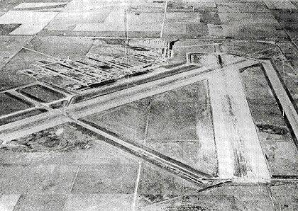

Cannon AFB New Mexico New Mexico · Military base · 34.381°N, 103.324°W Clovis Army Airfield, today's Cannon Air Force Base, in 1943. Photo: U.S. Army Air Forces, Public domain (source) Air Force special operations base. 1 Open in the interactive Watcher Sources Cannon Air Force Base Wikipedia